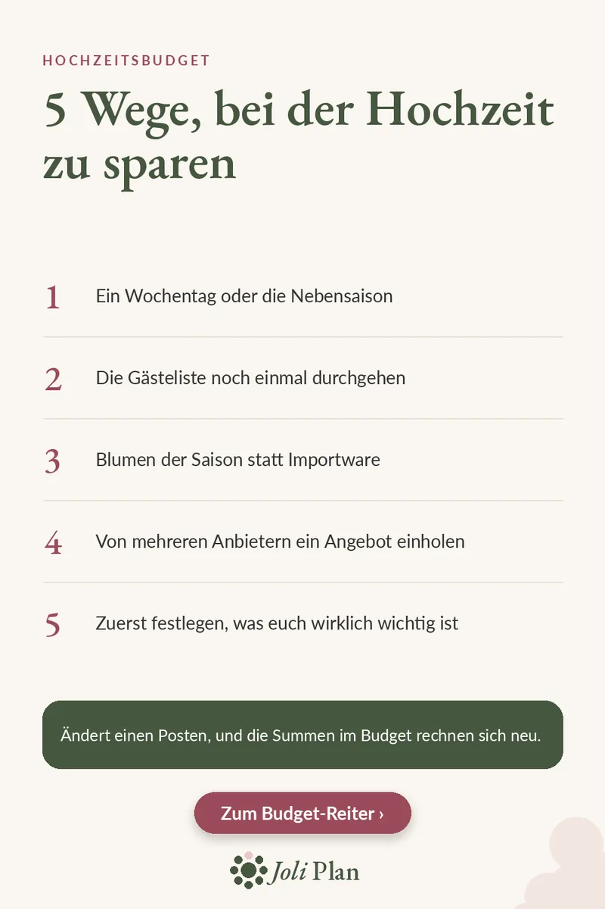

Hochzeitsbudget
Hochzeit sparen: 5 Wege für euer Budget
Aktualisiert am 04/11/2026
Bei einer Hochzeit zu sparen heißt selten, auf etwas zu verzichten. Meist heißt es, zu entscheiden, wo das Geld am meisten zählt, und jeden Posten noch einmal zu prüfen. Hier sind fünf Wege für den Anfang.
Den Hochzeitsplaner auf Etsy ansehen ›

Die 5 Wege
- Ein Wochentag oder die Nebensaison.
- Die Gästeliste noch einmal durchgehen.
- Blumen der Saison statt Importware.
- Von mehreren Anbietern ein Angebot einholen.
- Zuerst festlegen, was euch wirklich wichtig ist.
Warum gerade diese fünf
Catering und Location sind die größten Posten im Budget. In unserem Beispiel mit 32.000 € machen sie zusammen 16.257 € aus, gut die Hälfte. Ein Wochentag oder die Nebensaison kann bei der Location etwas verändern, eine kürzere Gästeliste beim Catering, denn das Catering folgt der Zahl der Gedecke.
Mehrere Angebote erlauben euch, zu vergleichen, bevor ihr euch festlegt, und Blumen der Saison halten den Posten Blumen & Deko im Rahmen. Wenn ihr zuerst festlegt, was euch am wichtigsten ist, fallen alle anderen Entscheidungen leichter.
Behaltet die Summen im Blick
Was ihr auch ändert: Haltet alle Posten auf einer Seite, damit ihr seht, was schon vergeben ist, und plant eine Reserve von rund 5 % für kleine Überraschungen ein.
Häufige Fragen
Wo lässt sich meistens am meisten sparen?
In unserem Beispiel machen Catering und Location zusammen gut die Hälfte des Budgets aus. Gästeliste und Datum wirken sich deshalb am stärksten aus.
Warum zuerst die Prioritäten festlegen?
Damit ihr Geld für das ausgebt, was euch wirklich wichtig ist, und beim Rest kürzen könnt.